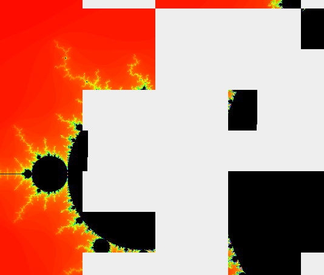
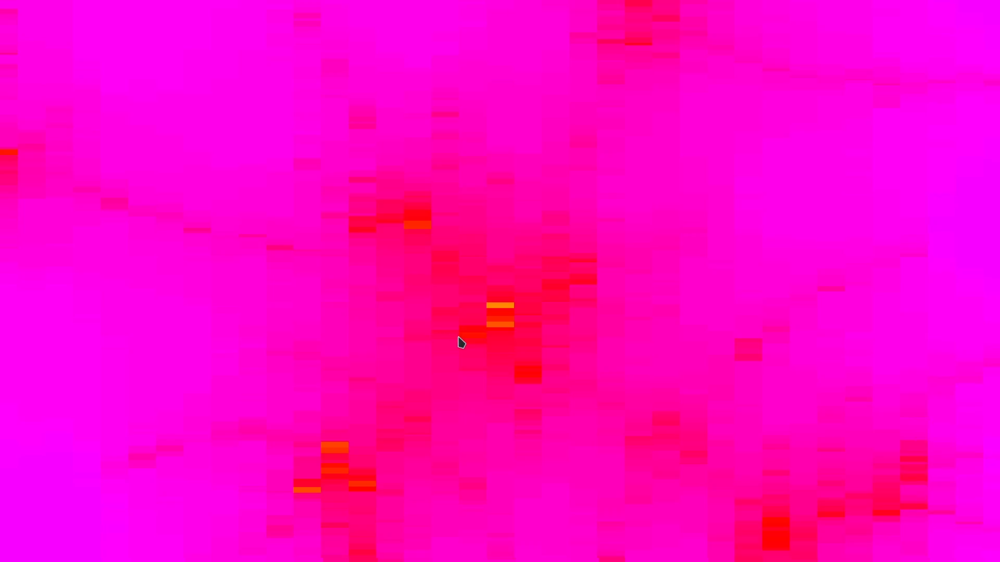

Fully zoomed out image
Fully zoomed out image
Software Mandelbrot renderer written with Java’s
Swing library (as with most of my Uis to date).
Program splits the frame up into segments in order to allow
for use of multiple CPU threads.

figure 1: segmented render blocks


figure 2: zoomed in slightly
figure 3: floating point limit